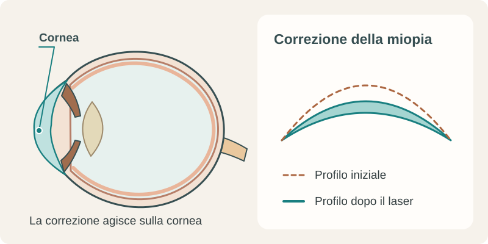

Quali difetti si possono correggere
Miopia, ipermetropia e astigmatismo possono essere trattati in casi selezionati. Il grado del difetto e la forma e lo spessore della cornea delimitano le possibilità. La presbiopia, cioè la progressiva difficoltà a mettere a fuoco da vicino con l’età, richiede una valutazione distinta.
Cosa si valuta prima del laser
Durante la visita si confronta la correzione attuale con le prescrizioni precedenti. Si studiano la superficie dell’occhio, il film lacrimale, la forma e lo spessore della cornea. Se usi lenti a contatto, chiedi alla segreteria quando sospenderle prima delle misurazioni.
Come differiscono le tecniche
La visita serve a valutare le opzioni di correzione, tra cui le tecniche laser sulla cornea e l’impianto di una lente ICL.
- PRK
- Il trattamento avviene sulla superficie corneale dopo la rimozione dell’epitelio. Nei primi giorni la ricrescita dell’epitelio può comportare fastidio e recupero visivo graduale.
- Femto-LASIK
- Un laser crea un sottile lembo corneale. Il chirurgo lo solleva, rimodella la cornea sottostante con un secondo laser e riposiziona il lembo.
- Impianto di ICL
- Il chirurgo inserisce una lente dietro l’iride, davanti al cristallino naturale, che rimane al suo posto. L’ICL può essere valutata per correggere la miopia, anche associata ad astigmatismo, in pazienti idonei.
Nella vita quotidiana
Domande frequenti
Quando potrò tornare a guidare?
Il momento varia secondo tecnica e recupero visivo. Concorda la ripresa con il chirurgo dopo il controllo.
La tecnica si può scegliere prima della visita?
Le preferenze personali contano insieme alle misurazioni dell’occhio. La valutazione può anche concludersi con il consiglio di continuare a usare la correzione abituale.

